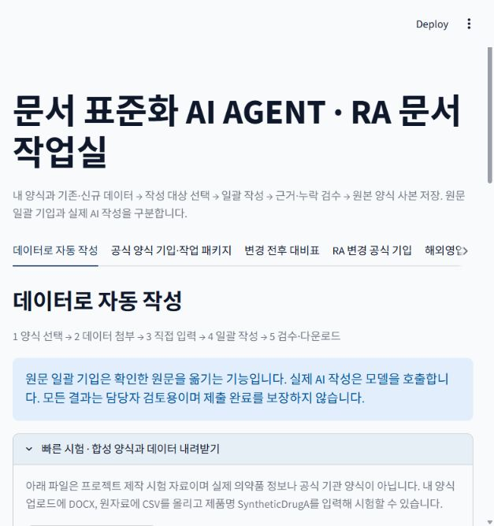
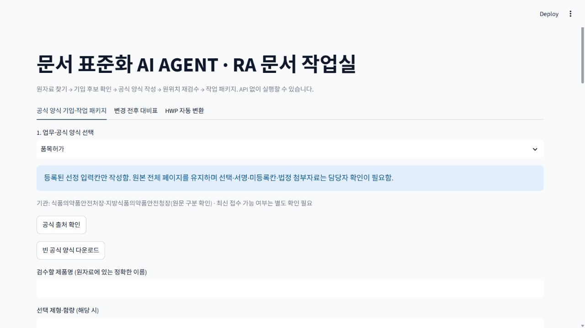
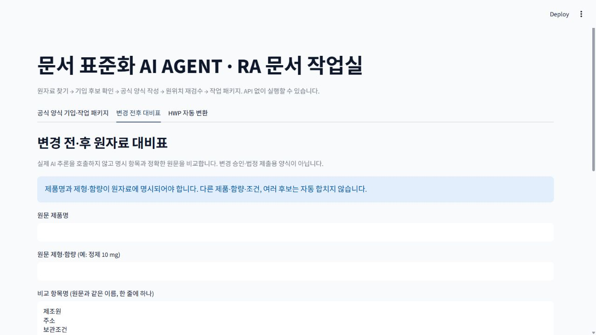
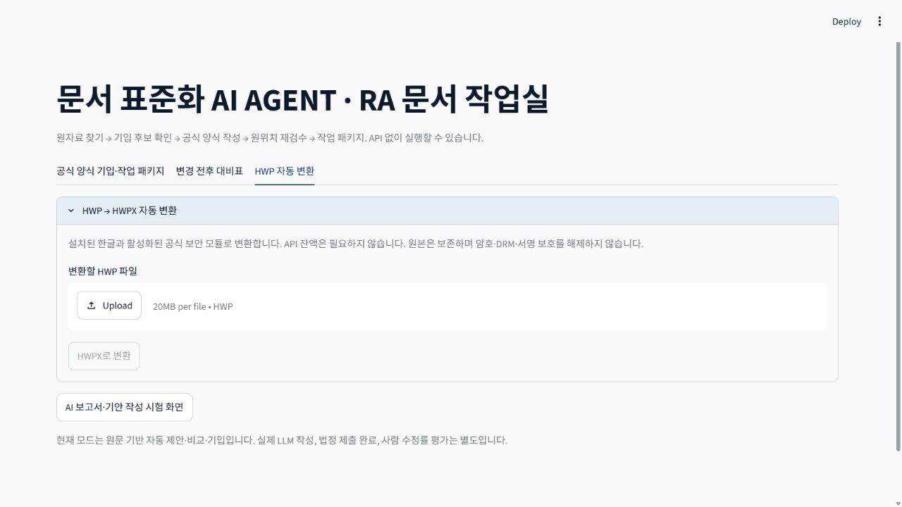

제약·약품 RA
CTD·DMF, 공식 양식 기입, 변경 대비와 HWP 변환을 진행합니다.
RA 작업실 열기 →직무별 원자료 기반 문서 자동화
RA 문서와 해외영업·해외사업개발의 이메일·거래 문서를 각각의 작업실에서 작성합니다. 출처와 누락을 확인하고 결과를 검토할 수 있습니다.
공유용 HTML 페이지는 로그인 없이 누구나 볼 수 있습니다. 문서 작업은 보호된 작업실에서 진행합니다.
CHOOSE YOUR WORKSPACE
현재 실행 가능한 두 직무를 분리했습니다. 공통 문서 작업실은 별도 검증을 마친 뒤 열 예정입니다.
CTD·DMF, 공식 양식 기입, 변경 대비와 HWP 변환을 진행합니다.
RA 작업실 열기 →바이어·파트너 문의에 근거를 연결해 회신하고 견적·무역 문서를 작성합니다.
해외영업 작업실 열기 →직무와 무관한 양식용 작업실을 검증 후 제공할 계획입니다.
HOW IT WORKS
한 화면에서 순서대로 진행합니다.
내 양식과 기존·신규 자료를 올리고 작성할 제품과 입력칸을 선택합니다.
출처가 연결된 기입 후보를 확인하거나 Gemini·Claude로 새 문장을 작성합니다.
출처·수치·필수칸과 저장 위치를 점검하고 문서와 근거 기록을 받습니다.
RA WORKFLOWS
원자료 항목과 양식 입력칸을 연결해 원문을 기입합니다.
확인된 DMF 절과 2.3.S/3.2.S 입력칸을 연결하고 누락을 표시합니다.
확인된 차이를 양식에 옮기고 HWP를 HWPX 사본으로 변환합니다.
VERIFY BEFORE USE
시험 결과와 실제 업무 적용 범위를 구분해 확인할 수 있습니다.
4,601전체 자동 테스트 통과 · 1건 건너뜀
3종HWP 원본 변환·배치 대조
미측정실제 담당자 수정 비율
현재 PC가 켜져 있어야 외부 작업실의 파일 처리와 다운로드가 작동합니다. AI 작성에는 모델 연결이 필요합니다. 자동 검수 통과가 법정 제출 적합성이나 사람 검토를 대신하지 않습니다.
선택한 5칸의 합성 자료 기입·저장 후 독립 검수와 Word 1쪽 출력을 확인했습니다. 원문 기입 시험이며 실제 모델 생성은 아닙니다.
이 평가에서 실제 모델 생성은 수행하지 않았습니다. 현재 Gemini 작성에는 사용자의 API 키가 필요합니다.

화면 확대 ↗원문과 출처 위치를 확인한 뒤 선택한 칸에 적용합니다. 공개 회사 자료 3건 중 2건은 기입·독립 검수에 성공했고 1건은 PDF 추출 권한으로 보류했습니다.

화면 확대 ↗제품·제형·함량을 대조하고 확인된 차이와 제공된 사유를 공식 3행 대비표에 옮깁니다. 합성 시험에서 등록 18칸 중 14칸을 기입해 검수했습니다.

화면 확대 ↗원본을 덮어쓰지 않고 설치된 한글로 변환합니다. 검증한 RA 고유 원본 3종의 한글 출력 총 5쪽 배치를 대조했습니다.

화면 확대 ↗공개 화면은 미리보기입니다. 실제 업로드·작성·다운로드는 보호된 작업실에서 실행합니다.
2026-10-07 전체 pytest 4,601 통과 · 1 건너뜀 · 실패 0 · 오류 0. 공식 RA 업무 등록 11종, 선정 입력 위치 284칸은 전체 법정 입력칸의 분모가 아닙니다. 원문 기입 성공 양식의 실제 기입은 각각 제품명 1칸 / 등록 16칸입니다.
합성 자동 기입 결과는 Word 출력 보기 ↗에서 확인할 수 있습니다. 해외영업 문서 4종은 프로젝트 제작 예제이며 실제 사용 빈도 순위는 측정하지 않았습니다.
이 평가의 실제 RA 모델 생성 성공 0건, 실제 담당자 관측 0건입니다. 해외영업 Gemini 실제 작성도 시간 초과로 성공을 확인하지 못했습니다. AI 초안 대비 사용자 수정 비율과 초안→최종 시간은 미측정입니다. 실제 CTD/eCTD 제출 적합성, 변경허가 업무 완결성과 담당자 검토도 별도로 확인해야 합니다.
검증 요약 JSON 다운로드 ↓TRY WITH YOUR DATA
이 파일에는 제품 사실·개인정보가 없습니다. 실제 근거를 기입한 뒤 작업실에 첨부하세요.